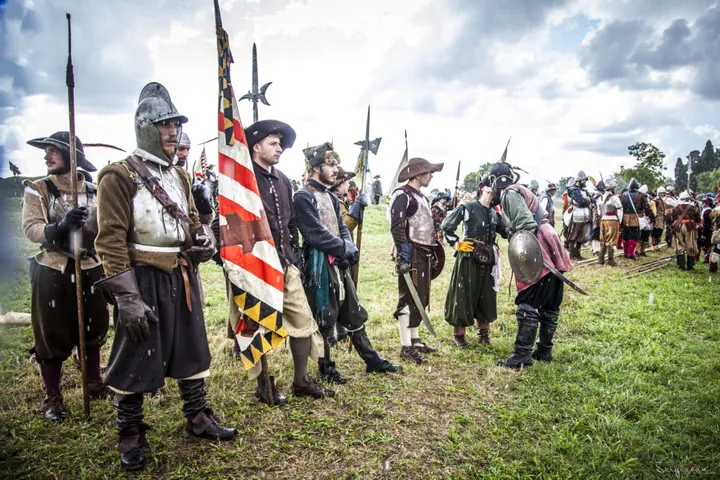

Friuli
da ven 4 set a dom 6 set · dalle 17:00
Palma alle Armi 2026
Rievocazione storica dedicata agli eventi del 1615 nella citta fortezza.
 Indicazioni
Indicazioni
- Costi e prenotazioni
- Biglietto €7 · alcune aree gratuite · Biglietteria in Piazza Grande
- Programma
- Programma ufficiale pubblicato. Il programma completo di due pagine è pubblicato dal Gruppo Storico Città di Palmanova.
- In caso di maltempo
- Nessuna indicazione specifica pubblicata.
- Note
- Biglietto unico giornaliero €7; gratuito sotto i 14 anni; €2 per residenti di Palmanova.
L’EVENTO
Descrizione completa
Palmanova ospita oltre 1.300 rievocatori provenienti da tredici paesi per ricostruire la Guerra di Gradisca. Accampamenti, mercato storico, duelli, musiche, danze e due grandi battaglie animano Piazza Grande e Porta Cividale.
Biglietto unico giornaliero €7; gratuito sotto i 14 anni; €2 per residenti di Palmanova. Accesso libero all’accampamento di Porta Cividale.
IL PROGRAMMA
Programma e orari
Appuntamenti raccolti dalle fonti elencate. Dove manca un orario, non è ancora disponibile in questa scheda.
Venerdì 4 settembre
- 17:00 · Apertura accampamenti a Porta Cividale
- 18:00–24:00 · Taberna Vexillarii in Piazza Grande
- 19:00 · Apertura ufficiale
- 20:30 · Innalzamento della bandiera e presentazione dei gruppi
- 21:30 · Scherma storica, musici e tamburi
Sabato 5 settembre
- 10:00–24:00 · Accampamento e mercato storico
- 11:30 · Sbandieratori e musici
- 16:00 · Dogal Quintana
- 18:00 · Battaglia del Vespro
- 20:30 · Corsa delle bandiere
- 21:30 · Concerto dei Corte di Lunas
Domenica 6 settembre
- 10:00–18:00 · Accampamento, mercato e attività didattiche
- 10:00 · Rivista delle armi
- 16:00 · Grande battaglia campale
- 17:30 · Contesa della Rotella
- 20:00 · Festa rinascimentale
- 22:00 · Ammainamento e spettacolo pirotecnico
INFORMAZIONI UTILI
Prima di partire
- Biglietto unico giornaliero €7; gratuito sotto i 14 anni; €2 per residenti di Palmanova.
- Accesso libero all’accampamento di Porta Cividale.
ORGANIZZAZIONE